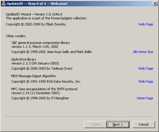
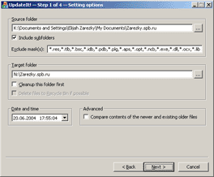
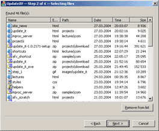

UpdateIt! is the application designed for the
synchronization of the source folder's content with the content of other (target) folder on
a local computer or (and) a remote FTP server. This is wizard that I wrote to fast and
comfortable update of my own personal website. It searches (at request — recursively)
all files in the source folder that are modified after specified date/time. It can copy found
files (everyone or selected) to the target folder with preservation of an initial structure
of the subfolders. This application allows to upload all files from the updated folder (with
preservation of its structure) to the specified FTP server, to compress this folder in the same
named zip-archive, to send one to the given E-mail.
Step #1 is the selection of source and target folders.
It is required to choose a name of the folder for searching the updated files and a name of
the folder where these updated files will be copied or moved. Also, it is required to
specify the date and time since which files in the source folder are considered updated.
If Include subfolders option is set , the files searching will
be carried out recursively — in the source folder and in all folders inside it. In the
field Exclude mask(s) there is possibility to type one or
several masks of files (separated from each other by commas) which should be excluded from
search. To delete the content of the target folder as a preliminary one it is possible to set
Cleanup this folder first option (if Delete
files to Recycle Bin if possible option is set files will be removed to the
Recycle Bin on conditions that its usage is enabled by system
options). Setting Compare contents of the newer and existing older
files option allows to exclude from results of search those files which binary contents
do not differ from the existing copies in the target folder.
Step #2 is reviewing the list of the updated files. On
this step you can see the list of the updated files found in the source folder. The Name, the
extension, the relative path in the source folder, and also the date and time of the last
modification are shown for each file. In order to remove file(s) from this list (and thereby
to exclude them from the further processing) it is required to mark corresponding line(s) and
to click the Remove from list button. Note that in this case
files leave only the list, but still stay in the source folder.
 Step #3 is actions selection. On this step it is required
to choose, what exactly should be done with the found files. Copying or moving files to the
target folder are obligatory actions that are chosen by means of the group
Action to perform switches. Besides this, it is possible to upload
the target folder contents (with full structure preservation) to the specified folder on a
FTP server. For this purpose set Also upload file(s) to the
FTP server option and fill the fields of FTP Settings
group, having specified the address and the port of a server, as well as the login and the
password for the access. To compress a target folder in the same named zip-archive, set
Also ZIP folder with the copied/moved file(s) option. This archive
file can be sent as an attachment to the given E-mail address. For this, set
Also send ZIPped folder via e-mail option and fill fields of
Mail Settings group, having specified addresses of the sender and
the recipient, and also the SMTP-server which will be used for sending the mail. Note that this
feature is accessible only in the case when the key
HKEY_CURRENT_USER\Software\Elijah Zarezky\UpdateIt!\SMTP in the
system registry contains DWORD named Enable and its value is
different from zero.
Step #3 is actions selection. On this step it is required
to choose, what exactly should be done with the found files. Copying or moving files to the
target folder are obligatory actions that are chosen by means of the group
Action to perform switches. Besides this, it is possible to upload
the target folder contents (with full structure preservation) to the specified folder on a
FTP server. For this purpose set Also upload file(s) to the
FTP server option and fill the fields of FTP Settings
group, having specified the address and the port of a server, as well as the login and the
password for the access. To compress a target folder in the same named zip-archive, set
Also ZIP folder with the copied/moved file(s) option. This archive
file can be sent as an attachment to the given E-mail address. For this, set
Also send ZIPped folder via e-mail option and fill fields of
Mail Settings group, having specified addresses of the sender and
the recipient, and also the SMTP-server which will be used for sending the mail. Note that this
feature is accessible only in the case when the key
HKEY_CURRENT_USER\Software\Elijah Zarezky\UpdateIt!\SMTP in the
system registry contains DWORD named Enable and its value is
different from zero.
 Step #4 is processing the files. On this step it is
possible to watch the progress of copying (or moving) the updated files from the source folder
into the target folder, of uploading files from the target folder to the given FTP server,
compression of the target folder and sending the given archive to the E-mail address that was
specified earlier.
Step #4 is processing the files. On this step it is
possible to watch the progress of copying (or moving) the updated files from the source folder
into the target folder, of uploading files from the target folder to the given FTP server,
compression of the target folder and sending the given archive to the E-mail address that was
specified earlier.
System requirements:
- Windows 2000/XP/2003/Vista/7;
- some free memory.
Plans for the future:
- preservation of source and target folders' „history“
- preservation of „history“ of the sender's and the recipient 's of the mail
addresses.
UpdateIt! Pro
 |
This edition of the UpdateIt! has the following differences from the
standard.
- Beyond standard Deflate, BZip2 compression method is supported. It compresses files more
efficiently than the Deflate algorithm, but is slower. It is supported by
7-Zip since version 4.5x, by
PKZIP since version 4.6 and by
WinZip since version 10.0. Earlier versions of these
programs will not decompress archives that use the BZip2 algorithm.
- AES encryption with key sizes 128-bit, 192-bit and 256-bit is
supported for the produced archive files. The format of AES encrypted data conforms to the
WinZip AES Encryption Specification. It is
the preferred way to ensure that your data is secure. UpdateIt! Pro
encrypts files the way the WinZip 11.0 does.
- If the number of the files to compress exceeds 65 535 or
size of an archive should be greater than 4 gigabytes then Zip64 format will be automatically
used. The Zip64 format is an extension to the standard Zip format that practically removes
limits in sizes and item numbers within a zip archive.
- This application is distributed as a freeware but closed source
due to the ZipArchive
Library Commercial License Agreement.
|
Export/import of options
Since version 1.0.2598, in the application there is a feature of options export/import (only
under Windows 2000/XP/2003) which can be useful at re-installation of the operating system.
Corresponding commands are in the system menu of the main window. Note that the export of
options is possible at any stage of work of the application, but the import of options is
possible only on a „zero“ step (on the Welcome! page).
Command-line keys
The first group of keys allows to set the name of a source folder and the condition of files
search in it, as well as the name of a target folder and parameters of work with it.
- SourceDir-Name:<folder_name>
- Full name of the source folder in which search of the updated files should be done. If
this name contains spaces it should be quoted; otherwise quotes' usage is acceptable, but
isn’t obligatory.
- SourceDir-Recurce:<0|1>
- If the value of this key is equal to 1, the search of files
is carried out recursively (in the source folder and all folders inside it), and if the value
is equal to 0, search is carried out only in the source folder.
Any other value will be interpreted as 1.
- SourceDir-Exclude:<masks_list>
- One or several masks of files (separated from each other by commas) which should be
excluded from search
.
- TargetDir-Name:<folder_name>
- Full name of the target folder where the updated files should be copied or moved. If
this name contains spaces it should be quoted; otherwise quotes' usage is acceptable, but
isn’t obligatory.
- TargetDir-CleanupFirst:<0|1>
- If the value of this key is equal to 1, target folder will
be completely cleared before the files begin being copied or moved to it, and will not if
the value is equal to 0. Any other value will be interpreted as
1.
- UseRecycleBin:<0|1>
- If the value of this key is equal to 1, files from the
target folder will be removed to the Recycle Bin (if its usage
is enabled by system options), and if the value is equal to 0
files will be removed permanently. Any other value will be interpreted as
1.
- SourceDir-WriteTime:<date_time>
- This is the date and time of files' modification in the source folder after which they
are considered updated.
- CompareContents:<0|1>
- If the value of this key is equal to 1 and if the copy of
the updated file from the source folder is available in the target folder, copying or moving
will be carried out only in the case when binary contents of these files are different. It
allows to carry out smart incremental updating of the target folder. The value of
0 results in „unconditional“ execution of file
operations. Any other value will be interpreted as 0.
The second group of keys determines the actions that need to be performed with the updated
files found in the source folder.
- MoveFiles:<0|1>
- If the value of this key is equal to 1, updated files will
be moved from the source folder to the target folder, and if the value is equal to
0, these files will be copied. Any other value will be
interpreted as 0.
- UploadFiles:<0|1>
- If the value of this key is equal to 1, updated files will
be uploaded to the specified FTP server and will not if the value is equal to
0. Any other value will be interpreted as
0.
- ZipFiles:<0|1>
- The archive file in ZIP format will be created from a target folder if the value of this
key equals to 1, and such file will be not created if the value
equals to 0. Any other value will be interpreted as
0.
- SendFiles:<0|1>
- Archive file with the target folder will be sent to the specified e-mail address if the
value of this key is equal to 1, and will be not if the value
is equal to 0. Any other value will be interpreted as
0.
The third group of keys specifies the FTP server for updated files and parameters of
interaction with it.
- FTP-Server:<server_name>
- FTP server name. The prefix „ftp://“ is not necessary to specify.
- FTP-Port:<port_number>
- The port through which connection is established. Standard value is
21.
- FTP-Login:<login>
- Login (user’s name on this server).
- FTP-Password:<password>
- The user’s password.
- FTP-Root:<folder_name>
- Root folder on a server into which it is necessary to upload files from a target folder
on a local computer (with preservation of its structure).
- FTP-UsePassiveMode:<0|1>
- If the value of this key is equal to 1, the so-called
„passive operating mode“ with a server will be used, and if the value of this key
is equal to 0 — the usual one. Any other value will be
interpreted as 0.
The fourth group of keys sets parameters of the SMTP connection that is used for sending
ZIP-archive with the target folder to the specified e-mail address.
- SMTP-Enable
- To enable SMTP usage. Value of this key is ignored; therefore it is no use to specify
it.
- SMTP-From:<sender’s_address>
- It is an E-mail address of the mail sender.
- SMTP-MailTo:<recipient’s_address>
- It is an E-mail address of the recipient of the mail.
- SMTP-Subject:<letter_subject>
- It is à subject of the mail. If the subject contains blanks, it is necessary to put in
quotes the value of this key; otherwise, quotes' usage is acceptable, but not obligatory.
- SMTP-Host:<server_name>
- It is the name of the SMTP server which should be used for sending the mail.
- SMTP-Port:<port_number>
- It is the port through which the connection is established. Standard value is
25.
- SMTP-Authentication:<0|1|2|3|4>
- The Value of the this key defines the method of the authentication, that is used at the
access to a server. 0 corresponds to the absence of the
authentication; 1 — to CRAM-MD5 method;
2 — to Login method; 3
— to Plain method; 4 — to NTLM method. Any other
value will be interpreted as 0.
- SMTP-UserName:<user_name>
- It is the user name (at the usage of the authentication).
- SMTP-Password:<password>
- It is the user password (at the usage of the authentication).
- SMTP-UseSSL:<0|1>
- If the value of this key is equal to 1, the so-called
„Secure Sockets Layer“ protocol will be used for the connection with the server.
This protocol guarantees safe data transmission on the network by means of combining
cryptographic system with the open key and block encrypting of data. If the value is equal
to 0, the usual SMTP protocol will be used. Any other value
will be interpreted as 0.
- SMTP-CharSet:<character_set>
- It is the encoding of the mail body (for example,
"windows-1251") which will be specified in
corresponding SMTP header.
The fifth group of keys sets the parameters of creation of ZIP-archive with a target
folder.
- ZIP-Method:<0|1>
- It is the method (algorithm) used for compression. 0 means
„Deflate“ algorithm, and 1 —
„BZip2“ algorithm. Any other value will be interpreted as
0. Attention: this key is recognized
only by UpdateIt! Pro edition.
- ZIP-Compression:<0|1|2|3>
- It is the compression level of archive. 0 means absence of
compression; 1 — the fastest compression;
2 — default compression (optimal on a ratio of speed and
size); 3 — the maximum compression. Any other value will
be interpreted as 2.
- ZIP-Encryption:<0|1|2|3|4>
- It is the method of archive encrypting. 0 means absence of
encrypting, and 1 — the standard encrypting supported by
ZIP algorithm. The values of 2, 3
and 4 corresponds to AES-128, AES-192 and AES-256 encryption
respectively. Attention: these three values will be recognized only by
UpdateIt! Pro edition. Any other value will be interpreted as
0.
- ZIP-Password:<password>
- It is the password on the encrypted archive.
Sixth and last group of keys sets various general parameters.
- Font-FaceName:<font_name>
- It is the name of a font which will be used by windows of the application. The value of
this key is used only if the key Font-PointSize is specified
and this key has a correct numeric value.
- Font-PointSize:<font_size>
- It is the size (in points) of a font which will be used by windows of the application.
The value of this key is used only if the key Font-FaceName
is specified.
- ResponseFile:<file_name>
- It is the name of the text file that contains other keys of the command line for the
application. If the path to a file is not specified at all it will be considered to be in
the current folder; if the relative path is specified it will be considered to be specified
regarding the current folder. Each line of such file can contain one or several keys. The
Usage of such files allows to create unlimited number of the shortcuts that give fast access
to the typical scripts of the application use. If this key is specified in the command line
all other keys will be ignored.
- DontSaveInput
- Not to remember the user input (either transmitted by means of the command line or set
by means of the graphic interface). The value of this key is ignored, therefore its
indication is not important.
At present the use of keys of the command line does not automate the work of the application
completely, it only substitutes the specified parameters into corresponding controls. It
allows to accelerate user’s work as much as possible if typical scripts of search and
processing of the updated files are present. Each of the keys can be used independently if
it has not been stipulated in a different way (as in case of the keys
Font-FaceName and Font-PointSize).
In any case, the keys of the command line have a priority over the corresponding options that
are kept at the system registry. For example, if the command line contains the key
SourceDir-Recurce that has the incorrect value of 4, and the
corresponding parameter in the system registry has the correct value of 0, the final
„result“ will be 1 as the interpretation of key value from the command line.
Version history
- 1.4.4324 (04.07.2008)
Some errors are fixed. Added UpdateIt! Pro edition. Added end-user
documentation in English.
- 1.3.4134 (06.01.2008)
The ability to use the keys of the command line is added. the Verification of the correctness
of the user input is improved. Some noncritical errors are fixed. Russian-language
localization of installer is improved a bit.
ZipArchive library is
updated to the version 3.2.0 from the 15th of December 2007.
OpenSSL library is updated to
the version 0.9.8g from the 19th of October 2007. Attention: it is
required to use Repository
project of revision 110 or above to build this version from sourcess.
- 1.2.3920 (16.10.2007)
The ability to set parameters of archiving of the updated files is added: the level of
compression and the method of encrypting. The application is rebuilt with the version 3.1.1
of ZipArchive library.
- 1.1.3870 (30.08.2007)
The support of the multilingual interface was added into the application and into its
installer (at present English and Russian languages are supported). Initially the language
is selected during the installation, but it can be changed at any moment by means of the
command Language in the system menu.
- 1.0.3841 (01.08.2007)
The application is rebuilt with the version 3.0.2 of ZipArchive library.
- 1.0.3696 (16.03.2007)
The ability of authentication on the SMTP server that is used for sending the mail is added;
methods SRAM-MD5, Login, Plain and NTLM are supported. The ability to use the SSL connection
while working with SMTP is added. The development of the project is converted under MS Visual
C++ 7.1 SP1; with this version the compatibility of the source code
with Visual C++ 7.0 SP1 compiler is not guaranteed. It is necessary to use
Repository project of revision
81 or above to build this version from sources (it is possible to download the so-called
„universal installer„ alternatively — it contains absolutely all sources
which are necessary for independent building of the application and its installers).
- 1.0.3410 (18.10.2006)
The license agreement is added to the application and its source code — Apache License,
Version 2.0. the "Universal" installer is added, it allows to choose one of possible types of
installation (for example, with all sources necessary for the independent building of the
application). Development of the project is converted under MS Visual C ++ 7.0 SP1;
with this version, the compatibility of the source code with Visual
C++ 6.0 SP6 compiler is not guaranteed.
- 1.0.3346 (18.08.2006)
The ability of interaction with FTP-servers in so-called „passive mode“ is added
— via Use passive mode option on the step Choosing an action (my gratitude to
Pavel Pimenov for reporting this
issue). Authors improved the realization of compression of files in
ZIP format and message sending
using SMTP protocol.
Attention: it is necessary to use Repository project of revision 71 or
above to build this version from sources.
- 1.0.2800 (16.07.2005)
Support for visual styles on Windows XP/2003 is added. Authors improved the realization of
compression of files in ZIP
format and message sending using using SMTP
protocol.
- 1.0.2711 (23.04.2005)
Authors improved the realization of
compression of files in ZIP
format and message sending using using SMTP
protocol.
- 1.0.2598 (06.01.2005)
The ability of export/import of options of the application is added (works only under Windows
2000/XP/2003). The system menu is „improved“ a bit. The author corrected some
errors in the code that realizes the support of SMTP protocol.
- 1.0.2461 (29.12.2004)
The end-user documentation in HTML Help format is added. It is insistently
recommended to un-install the previous version in a regular way before the installation of
the given version.
- 1.0.2297 (25.07.2004)
The executable file of the application is compiled with the optimization of the size.
- 1.0.2283 (11.07.2004)
The ability to compare the contents of the updated files with their existing old copies in
a target folder is added.
- 1.0.2260 (20.06.2004)
Some spelling mistakes on page Welcome! are corrected.
- 1.0.2259 (19.06.2004)
The author corrected some errors in the code that
realizes the support of SMTP protocol (this code is used at sending the archive of the
updated files to the specified e-mail address).
- 1.0.2172 (28.03.2004)
Very stupid error is corrected: this error was the reason for non-responsiveness of the
application to system inquiries while performing file operations. The error which led to the
incorrect restoration of the password for the access to FTP server is corrected. The ability
of minimization of the application window is added.
- 1.0.2171 (27.03.2004)
The column Size is added to the list of the updated files on
page Selecting files. This column displays file sizes in bytes.
Now in the column Name of this list not only file names are
shown but also the system icons which correspond their types. The ability to sort the list
both in ascending and descending order is added. Now the setup writes into the system
registry default the value for file masks which should be excluded from search.
- 1.0.2169 (25.03.2004)
The ability to set one or several masks for files which should be excluded from search is
added. Now in the tree the node corresponding to the folder, whose name is specified in the
input field, is automatically marked out at the opening of the dialog box of folder
choice.
- 1.0.2159 (15.03.2004)
The Encrypting of the password for access to a FTP-server is implemented at its preservation
in the system registry.
- 1.0.xxxx (??.??.????)
The history was not kept. Most likely, the first stable version that was suitable for
practical use was 1.0.1646…
UpdateIt! On Google Code
Since December, 2007, the UpdateIt! project, is placed on
Google Code as well. Its main page is accessible at
http://update-it.googlecode.com. It is
possible to find the latest development builds as well as the mirror of
Subversion repository with all revisions of
project sources there. For anonymous access to reading this mirror and receiving local copies
of all files that are required for independent building, It is necessary to perform the
following steps.
- Create somewhere in file system a new folder with the name
GoogleCode for example.
- Launch Command Prompt, go to this folder and sequentially
execute these commands:
svn checkout http://repositorium.googlecode.com/svn/trunk/ Repository
svn checkout http://update-it.googlecode.com/svn/trunk/ UpdateIt
After that, to build the project, it is enough to open the file
UpdateIt.2003.sln from the folder
GoogleCode\UpdateIt in Microsoft Visual Studio .NET 2003
environment, to set UpdateIt as the startup project and then to execute
Build Solution command. Completely automated building of the
project and its distribution kits can be executed by means of utility
NAnt after its assignment on an input file
UpdateIt.2003.build — it is necessary to go to the
GoogleCode\UpdateIt folder and then to execute a corresponding
command from Visual Studio .NET 2003 Command Prompt.
Copyright © 2002—2009 Elijah
Zarezky, english translation by Alla Dmitrieva